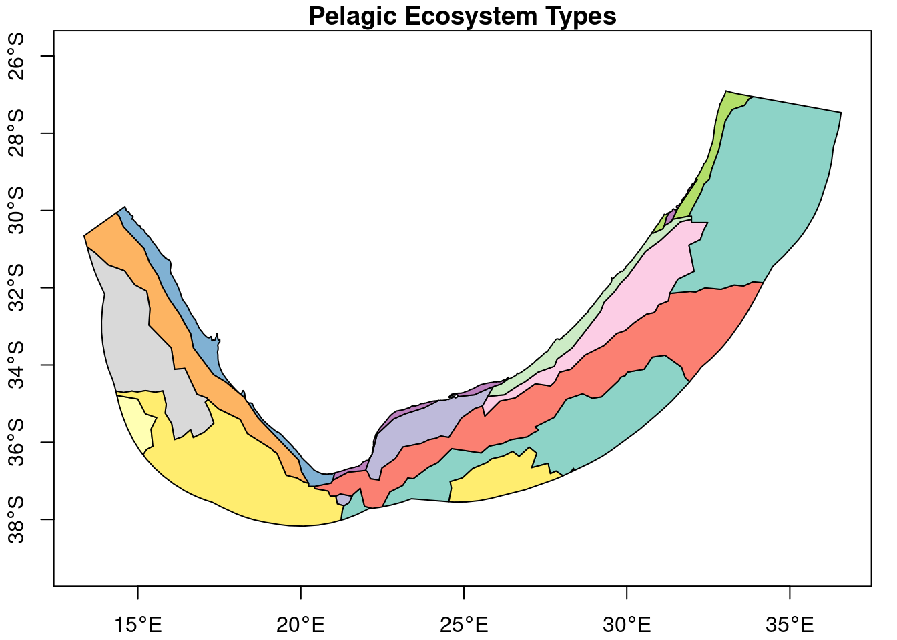

Your greatest collaborator ever is likely to be your future self. Do yourself (and all other collaborators) a great service by keeping an organised and well documented project that they can navigate and understand with relative ease. The biggest impediment to collaboration is finding (and understanding) the pertinent information.
There are different ways of structuring your project directories to keep them organised. In our team we try to keep a fairly standardised structure as below (recognising that some projects will have unique requirements):
project (root) folder
The “home” of your stand-alone project. It should typically contain everything the project needs and all the resultant outputs, organised in meaningful subfolders. It also contains your README.md, .Rproj and .gitignore files (which are created automatically).
data folder
All your input data (often included via a link); these files generally do not get altered or over-written by your project scripts. You can modify your input data with your scripts, but do not overwrite the original input file (save an intermediate output file if necessary).
scripts folder
All your scripts that contribute to your workflow (the documented ‘recipes’ of your work)
outputs folder
Any and all results saved by the scripts (besides the images that we prefer to put in plots); these could be further divided into types of outputs if you would like.
plots folder
Any outputs that consist of image files (plots/figures) that you may want to include in reports or help visualise your results.
Therefore, anything written (saved) by the scripts is written to “outputs/…” or to “plots/…”. We generally avoid writing to the data directory as we want to strictly avoid changing input files. We also tend to avoid writing into the root directory as that might get crowded and chaotic if we generate a lot of files. See our project_template if interested.
1.1 How do we avoid many duplicated input files across different projects?
One solution is the use of symbolic links (or directory junctions), which you create inside your project data directory and which point to a target folder that is stored elsewhere on your computer and contains the input data.
In the Windows Command Prompt (cmd), use the mklink function in the following way:
to create a linked folder (first set of inverted commas) that points to your target folder (second set of inverted commas). Hint: copy the absolute paths from your Windows Explorer.
If you require admin rights to do so and lack them, then use /j instead of /d, which ironically, seems potentially more risky (at least in our context). See some background about links and a very brief link testing project for further info.
Warning: In Windows, do not copy linked folders from one location to another (e.g. to replicate them from one R project to another), as they seem to paste the target contents and not a linked folder. *Please shout if anyone knows how to get around this problem.
If you repeat the above approach of linked folders across all your R projects, they can all point to a single directory that houses your input data somewhere else on your computer.
NB Warning: Always ensure that you add the symbolic link, e.g. data/link2gis in the above example, or your entire data/ folder, to the .gitignore file! Otherwise, Git will try to stage and commit your entire linked data directory, which might not be intended and may often be huge.
By creating the above linked folders, together with the use of the R function list.files() to search for and load your input files, we can have complete interoperability between different machines (or collaborators), even if they have their data stored in different places (under different folder names).
### example## load the spatial features and dplyr packages (install them if you have not yet done so)if (!require("sf")) install.packages("sf"); library(sf)if (!require("dplyr")) install.packages("dplyr"); library(dplyr)## create file paths (find the correct path, which can vary among different machines)mem_fl <-list.files(path ="../data", pattern ="^Marine_Ecosystem_Map_2023_final_pelagic_only.gpkg$", recursive =TRUE, full.names =TRUE) # we include '../' to go up one directory level to the root folder, because I created a 'quarto' folder and unlike other (normal .R) scripts, quarto files get rendered from the folder they are saved in. But, running it in the R console, we need to remove the '../' as the default working directory is the project root directory. this difference between the 'working directory' of quarto files and the R console or R scripts, can be avoided by using the here() function:# mem_fl <- list.files(path = here::here("data"), pattern = "^Marine_Ecosystem_Map_2023_final_pelagic_only.gpkg$", recursive = TRUE, full.names = TRUE)## load the spatial file mem <-read_sf(dsn = mem_fl)## plot the pelagic ecosystem types# plot(st_geometry(mem), axes=T)mem %>%st_transform(crs =4326) %>%select(P_EcosysType) %>%plot(axes = T, key.pos =NULL, main ="Pelagic Ecosystem Types")

The file will be found as long as it exists somewhere within the path specified. To demonstrate, rename the ‘pretend_link2gis’ folder name and rerun it. Obviously, for consistent results and reproducibility, the collaborators need to ensure they have precisely the same input data! See Section 4 for a trick to accomplish that.
2 Version control
Once we have our data and file structures organised, we need to try and write organised and well-documented code. To track updates to the code, snapshot specific versions (e.g. of results shared with a collaborator or used in an output), and remain organised among multiple collaborators working on the same project, we need a version control system.
2.1 What is Git?
A solution to track and document changes to files (inputs, outputs, results, document versions, etc). It allows you to take a snapshot of your project contents at a point in time and save it with a meaningful commit message, so that you can roll back to that previous state (or recover individual files from that state) at any future time.
Git will track changes in any file formats, including Word documents, spatial files, etc. However, the very useful git diff function, which highlights differences in the content between file versions, works only for selected (mostly text) file types.
Before you start using Git for the first time, you need to set your credentials either within a terminal:
See some GitHub information on the commit email address, which you may want to read if you’re worried about exposing your email address online.
Initialise Git
Once your Git profile is created, you can initialise (activate) Git on any project (folder). This action is needed only once for each project and if you clone a remote repository, you bypass this step as the cloned repository is already initialised.
In RStudio, it can be achieved via Tools > Project Options > Git/SVN; select Git under Version control system.
Alternatively, simply type git init in a terminal, ensuring you’re in the project root folder.
The .git folder appears inside your project folder once you have initialised Git on that project and it contains the (magic) history that tracks your committed versions over time.
2.2 What is GitLab/GitHub?
An online platform that allows you to share your project with the public, or selected collaborators, and your collaborators are able to make changes that you can then ‘accept’ (merge) into your project. The updated versions or changes to the project are ‘pushed’ (from computer to online repository) and ‘pulled’ (from online repository to computer) with Git commands.
If you would like to version control your work on your own computer (and nothing further), then you need only the Git software installed. If you would like to create an online repository (copy of your project) so that others can see it, or to be able to share your work with collaborators, then you will additionally need to create a profile on GitLab or GitHub (or equivalent) and ‘push’ your project to an online repository.
We will only scratch the surface of the most common Git operations. An excellent resource for finding your feet with Git and using it with R is Jenny Bryan’s Happy Git and GitHub for the useR.
2.3 Connecting to GitHub/GitLab
Making the secure connection between RStudio (or Git) on your computer and your GitHub or GitLab profile can sometimes be a frustrating exercise. There are multiple ways of going about it, please read the relevant instructions for GitHub or GitLab. I have avoided trying to use SSH, mainly because I remember a staff member of mine struggling to SSH to a cluster computer from the SANBI network a few years ago (due to SANBI network restrictions). If anyone is using a SSH connection with GitHub/GitLab from SANBI’s network, please shout to correct my untested aversion!
GitHub authentication:
Go to https://github.com/settings/tokens and click “Generate token” to generate your personal access token (PAT). Recommendation is to select repo, user, and workflow before confirming Generate token.
Ensure you safely store your PAT; this is your password for Git to communicate with GitHub!
Install the R package gitcreds and then pass your PAT to it to enable Git to pull and push changes from and to GitHub:
gitcreds::gitcreds_set()
Note: If any Git operations require a password to access GitHub, enter the PAT, not your GitHub profile password.
Unlike GitHub, GitLab allows you to use your GitLab profile username and password to authenticate. However, if you have enabled Two-Factor Authentication, then you must use a PAT as your password when prompted for Git operations.
2.4 Common Git functions
A general recommendation is to use cheat sheets when you’re learning a new tool, e.g. Git cheat sheet.
RStudio has integrated Git functionality and a Git interface on RStudio becomes visible once you have initialised Git version control on that project (close and reopen RStudio if it doesn’t appear). The Git interface on RStudio provides buttons for the most common Git operations, which can alternatively be executed in a terminal. Sometimes you need to execute a command that is not covered by the buttons, so it is a good idea to become familiar with using the terminal (and many advanced users revert to using the terminal only).
Cloning remote repositories
Very often the first thing you might want to do, is to clone an online repository from platforms such as GitHub or GitLab. To do so, navigate to the online repository website and copy the relevant URL from the Code drop-down. In RStudio, create the new cloned project via File > New Project > Version Control > Git and pasting the URL into the relevant space, checking that you’re happy with the project directory name and location, before confirming Create Project.
Alternatively, create a project folder, navigate to it with the terminal, and clone the project with the following code, but replacing the URL with the one copied from the repository:
git clone https://github.com/username/repo.git
This approach of cloning online repositories is how most of us novice Git users start a new project: We create a new empty project on GitHub/GitLab, clone it to our computers, and then start updating the README.md and create the project folders, files and update the .gitignore file(s). Once the basic parts are in place, we can do our first cycle of staging the changes, committing them to a version and pushing them to the remote repository.
You can push an existing project to GitHub/GitLab, however I’ve struggled to achieve this in the past. A way to circumvent it is to do the above clone and then copy and paste your project contents into the newly cloned (but mostly empty) project folder.
A second alternative, to push an existing project on your computer to GitHub, is to type usethis::use_github() in your R console (having installed the usethis package). Before doing so, you need to ensure that your R project has Git initialised. This should create a new GitHub repo named the same as your project and push your files to it. Remember to set up your .gitignore appropriately before pushing your project.
Pulling updates
To pull the latest version from the online repository (referred to as ‘remote’), use the Pull button on the Git pane in RStudio.
This is equivalent to typing the following in a terminal:
git pull
If you are collaborating with others on a project, it becomes vital to pull changes before you start making changes, so that you’re working with the latest additions from your team mates!
Git status
The Git pane in RStudio provides an easy overview of what the status is of your project, showing up files that have changed but are not yet committed. It also indicates whether they have changed, have been deleted, are newly created, etc. Similar (and more detailed information) can be viewed in a terminal with the command:
git status
Staging changes
Selecting the changed files that you want to commit, is referred to as staging them. The files that have not changed do not need to be staged (nor committed), but will be part of the commit version.
In RStudio, you stage the files by ticking their boxes in the Staged column of the Git pane.
In the terminal, you stage all modified files with:
git add -A
or if you want to add specific files, name them:
git add filename1.ext filename2.ext filename3.ext
Git commit
To ‘save’ or take a snapshot of your project folder with the staged file changes (and everything else not in .gitignore), you need to make a commit. You can stage and commit only certain (changed) files, while leaving other changed files unstaged and uncommited (leaving them in the previous committed version state).
To commit in RStudio, select the Commit button in the Git pane, with files selected for staging, add a commit message in the Commit message box and click Commit.
Alternatively, the terminal syntax is as follows:
git commit -m “Your commit message describing what has changed.”
or, if you would like to stage and commit your files in one step, you can use:
git commit -a -m “Your commit message describing what has changed.”
Try to write meaningful commit messages, both to help your collaborators understand the changes and in case you need to identify a specific commit in a few days, months (or years) time.
Pushing changes
After you have committed changes, those can be pushed to the remote repository by clicking the Push button on the Git pane in RStudio.
Alternatively, the terminal command is:
git push
If one of your teammates has pushed their changes to the online repository since your previous pull, you may get a ‘rejected’ error message, stating “Updates were rejected because the remote contains work that you do not have locally”.
In most instances, this can be easily resolved with a ‘Pull with Rebase’ (see the drop-down arrow next to the Pull button in RStudio or type git pull --rebase into a terminal).
However be very mindful that merge conflicts mean that the same lines of a file where changed to two different things by two different people (could even be you and your past self! If you forgot to pull changes you made on a different computer before you started working). The best way to deal with this is to then use git pull, which will give you merge conflicts and tell you which files have conflicting changes (or if you don’t have any conflicting changes it will just update your files with the latest online work and you can re-stage commit and push your work) look at which files have conflicts and look at them. The sections that have two ‘versions’ will have —HEAD followed by your most recent version, and then a second section of the previous/other version. You have to chose which version you want to keep, delete the HEAD and other git additions, restage and commit you accepted version and then you can push without trouble and you have fixed your merge conflicts.
An example of this workflow is:
$ git push To https://gitlab.com/nba_2025/git_tutorial.git ! [rejected] main -> main (fetch first) error: failed to push some refs to ‘https://gitlab.com/nba_2025/git_tutorial.git’ hint: Updates were rejected because the remote contains work that you do not hint: have locally. This is usually caused by another repository pushing to hint: the same ref. If you want to integrate the remote changes, use hint: ‘git pull’ before pushing again. hint: See the ‘Note about fast-forwards’ in ‘git push –help’ for details.
N.Besseling@CPTLTP0048 MINGW64 ~/Documents/repos/git_tutorial (main) $ git push Enumerating objects: 14, done. Counting objects: 100% (14/14), done. Delta compression using up to 22 threads Compressing objects: 100% (8/8), done. Writing objects: 100% (8/8), 936 bytes | 936.00 KiB/s, done. Total 8 (delta 6), reused 0 (delta 0), pack-reused 0 (from 0) To https://gitlab.com/nba_2025/git_tutorial.git 638bf52..add7213 main -> main
git diff
Highlighting the differences between two versions of the same file can be very useful when trouble-shooting a merge conflict or trying to remind yourself of what changes you’ve made (if any). The Diff button on RStudio’s Git pane does that for you and by default shows up any changed files that have not yet been committed. Similar can be achieved from the command line with
git diff
to scroll through all the changes for each file, or to examine a specific file, by adding its name:
git diff filename.ext
Git log
Want to see the history of Git commits (and branches) on your project? In RStudio, you can click on the History button in the Git pane (note: not the History pane of your project), which shows you the sequence of previous commits and provides a visual representation of branches.
That information is taken from the Git log, which can be accessed on the terminal with:
git log
The most common Git tasks
Although there are many more Git commands and most of them can be elaborated on with several options or additional arguments, by far the most common sequence of tasks for us tend to be:
git pull to ensure we have the newest version;
git add . to stage changed files, followed by
git commit -m “descriptive commit message” to commit the changes;
git push to push them to the remote repository;
git pull --rebase if the push threw a merge conflict, followed by another git push
If you are facing problems getting Git and GitHub/GitLab to work with RStudio, try to read Happy Git and GitHub for the useR or other online resources.
Remember to never create a Git repository inside another Git repository.
2.5 The importance of .gitignore
The .gitignore file is a text file that lists which files (or directories) should not be tracked by Git. In other words, those files/directories listed will not appear at all in the Git repository and any changes to them will not be tracked.
This is useful for many different contexts, e.g.:
sensitive input or output files you do not want shared with those accessing your project;
your secret credentials saved in the .Renviron file (see Section 2.6);
large files that will cause you to exceed file size or repository size limits;
temporary files or other files that change frequently but have no bearing on project contents;
2.6 The .Renviron file
Any login credentials (e.g. username and password to access your databases) or other sensitive information that you want accessible to your R session, but which you do not want to share with collaborators (or the public if your project is public), you should add to a special file named .Renviron. This text file is treated in a special way, in that objects defined in it are automatically loaded into your R environment when you open your project in RStudio. If you want the same credentials accessible across all your R projects, you can save such information in an .Renviron file in your HOME directory. If you want different credentials accessible to different projects, you can instead create a project-specific .Renviron file in your project root directory. Remember, if you make changes in your .Renviron file, you need to restart R to load those changes.
Very important: Make a habit of adding ‘.Renviron’ to your .gitignore file, so that the sensitive information you have put there is not pushed to your online repository!
2.7 Things to watch out for
Always review and be certain about what is included or not included in .gitignore. We need to be careful to not share (push) sensitive data or credentials - e.g. it would be a horrible mistake to push your collaborator’s highly sensitive data to a public Git repository!
Large file size limits and overall repository size limits need to be taken into consideration. For example, if you create (or include) a file > 100 MB in your project, you’ll be able to commit it on Git on your local machine, but when you try to push that commit to GitLab, it will be rejected (and can get complicated quickly).
3 The importance of branches
Once a project has become mature (contains a substantial amount of work and is worth protecting), it becomes important that further development moves to separate ‘feature’ branches and collaborators avoid making changes directly to the main branch. A branch represents a complete working copy of the project and anything changed on a feature branch has no bearing on the main branch, until it is explicitly merged into the main branch, transferring its updates into the main branch. The developer of the feature branch opens a ‘merge request’ on GitLab/GitHub, once their changes have been tested and reviewed (make sure they don’t break anything!). The owner(s) of the project are responsible for reviewing the changes and deciding whether they approve the merge or not. Typically (and by default settings), a feature branch is deleted once it has been merged into a main branch, as that updated work has moved into the main branch.
In RStudio, a branch is easily created by clicking the New Branch button in the Git pain. Give it a concise but descriptive name. The same can be achieved in the terminal with:
Once you start collaborating on projects, it becomes especially important to pull and push frequently. Before you start working on a new feature, pull the remote project, in case your teammates have made some changes since you last worked on it. Otherwise, you’ll be adding your changes to an outdated version!
Warning: Always double-check which branch you’re working on before making your changes. If you forget to, there are ways of moving your changes to another branch.
Creating issues (on GitLab/GitHub) and then closing those issues with a commit, is a really nice way of documenting updates. Issues are used to document problems in the project code, or wishlist features to add in future. When those problems or wishlist items are addressed, the commit message can simply reference the issue number (e.g. “fixed #28), which will automatically close that issue number.
4 A centralised data repository (with SANBI IT systems)
Reproducible science requires us to apply exactly the same methods to exactly the same datasets. Sharing scripted workflows goes a long way to make methods reproducible, but another critical aspect is ensuring that the input data are identical. If we all have our own copy of input datasets on our machines, how do we ensure that they always remain the same, including when the data manager/owner updates them with new data or corrections? Below is a suggested approach that we are starting to implement. If anyone foresees problems with it, or if you have other solutions, please share!
Within the SANBI Marine Programme Team (Microsoft Teams), we have a ‘marine_data’ channel, where we curate all of our spatial layers and datasets. Because it includes datasets that have sharing and usage restrictions, it is a private (protected) channel and membership is restricted to those who need it. Although not critical to this demonstration, the data are grouped in thematic subfolders and a data inventory (spreadsheet) in the root folder captures the metadata and the location (folder path) of the datasets. This Teams channel is our ‘centralised and authoritative data’ storage. The advantage of using a Teams channel rather than a staff member’s OneDrive account, is that the channel should be safe and persist irrespective of staff turnover. If datasets are updated, they need to be updated here and tracked in the data inventory.
Up until a few days ago, we manually downloaded a copy of the data to our computers. We had to remember to re-download the relevant folder or dataset if changes were made to them. However, Natasha recently noticed that we can add a shortcut to the Teams channel in our OneDrive account, and the OneDrive account is synced to our computers.
Lets try this:
Navigate to your MS Teams and to the nba_data channel within the NBA_data team.
Click on ‘Add shortcut to OneDrive’ in the options near the top (center) of the screen.
If it is not already, set up your computer to sync your OneDrive account (or certain parts of it), including the newly added nba_data folder.
If you manage that, you have a synced version of the Teams data folder on your computers and multiple people can access the same dataset. Any updates or changes made to that dataset on Teams will sync through to everyone’s OneDrive and their computer (when they next access that file).
Lets try the same exercise as above in Section 1.1, but this time create a symbolic link from your project data drive to the nba_data folder we just added to OneDrive. For me, this was typing the following into Windows Command Prompt:
So, now we can all access the same nba_data datasets with our R projects.
But, beware:
Never write to your data (input) folder! This rule becomes absolutely critical if we are all sharing access to a central authoritative data repository. These data are not your personal copy! Do not make changes to them unless you are the authority/owner/data manager or have explicit permission or instruction to do so. (Having read-only access would be ideal if we can configure that)
Unless it is appropriate to share your input data with the online repository (and the data folder does not exceed your online repo size limits), you may likely want to add the linked folder (‘link2nba_data’ in the above example) to your .gitignore file. I already did this for this tutorial, because I wanted you to add those data as a linked folder via your OneDrive account and not receive them when you cloned the online repo.
Lets load some of the data and play with them:
## load the spatial features and dplyr packages (install them if you have not yet done so)library(sf)library(dplyr)if (!require("nbaR")) devtools::install_github("SANBI-NBA/nbaR"); library(nbaR)## create file paths (find the correct path, which can vary among different machines)mem_fl <-list.files(path = here::here("data"), pattern ="^Marine_Ecosystem_Map_2023_final_pelagic_only.gpkg$", recursive =TRUE, full.names =TRUE)threat_fl <-list.files(path = here::here("data"), pattern ="^nba_example_thr_data.csv$", recursive =TRUE, full.names =TRUE)bar_plot <-nba_plot(NBA_example_thr_data,`OVERALL types`,2:5,CHRT ="bar",NUM =TRUE,LAB ="Percentage of ecosystem types",SAVE =NULL)bar_plot
5 General notes on good data hygiene (See Borer et al. 2009)
Use descriptive, standardised names for your files and folder names. Avoid spaces, use underscores or dashes instead.
Use plain ASCII text for your file names, variable names, and data values. Avoid spaces, brackets or other special characters that will cause you pain in programming tasks.
Have your data in long table format (add data in rows, not columns).
Each column should contain only one type (class) of information (either text, numeric, etc.).
Store data in non-proprietary software formats and consider hardware formats & longevity (save data from those floppy disks!).
Always store an uncorrected, original data file.
6 References
Borer ET, Seabloom EW, Jones MB, Schildhauer M (2009) Some Simple Guidelines for Effective Data Management. The Bulletin of the Ecological Society of America 90:205–214. doi: 10.1890/0012-9623-90.2.205